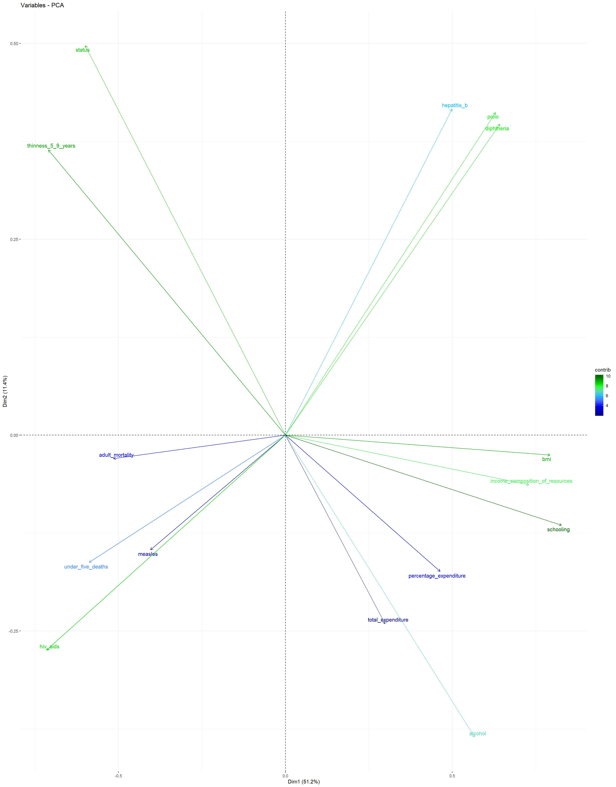

To increase life expectancy, it is of high importance to track the crucial factors that have contributed to having a high life expectancy in societies. Having that knowledge is a key factor in the field of public health since it can enable societies to come up with policies and initiatives that can eventually lead to prolonging lives. Moreover, prediction of life expectancy is one of the most important factors in end-of-life decision making, since having a sound and realistic anticipation of life expectancy can help individuals and the medical system determine the course of treatment. It can also be a determining factor when it comes to prognosticating health care services and facilities and deciding how to allocate them rationally in critical and challenging times. Also, investigating and comparing life expectancy in different societies helps to detect disparities to improve public health policies. To this end, this project focused on building a model to predict life expectancy using a dataset that contains life expectancy, as well as related information across different countries and years.
In this project, I am working with Life Expectancy dataset. The dataset is obtained from Kaggle (https://www.kaggle.com/kumarajarshi/life-expectancy-who) which has been gathered from WHO and UN websites. The health-related factors for different countries has been collected from Global Health Observatory (GHO) data repository under WHO, and its corresponding economic data was collected from United Nation website.
The original dataset has 2938 observations of 22 variables, from 193 different countries. These variables include:country, status, year, infant_death, adult_mortality, alcohol, percentage_expenditure, hepatitis_b, measles, bmi, under_five_death, polio, total_expenditure, diptheria, hiv_aid, gdp, population, thinness 5 to 9, thinness 10 to 19, income_composition_of_resources, schooling (Full description of variables can be found in the Kaggle address provided).
I start with looking at variables and a quick check of the values, maximum and minimum and the number of NA’s. The results show that there are problems associated with data including a lot of skewness and outliers, and lotf of missing values.
I left out variable country for general analysis because I am interested in a general model for all countries. I also do not consider population in this question because the values seem to be in in-consistent units (millions and trillions) and many of them differ from countries population reported by official sources, so it might be misleading in models. Also, average bmi value for some countries are not reasonable and are very high or low, so I substituted values smaller than 10 or greater than 50 with NA. Also for under_five_deaths it does not seem reasonable that a lof of countries had no death for children under age five, so I also substituted zero’s with NA’s.
Also, correlation matrix from of dataset shows very high correlation between infant_death and under_five_death (0.98), between percentage_expenditure and gdp(0.96), and between thinness_5_9 and thinness_10_15 (0.93). So, I selected the ones that contain more information about life expectancy and have higher correlations with reponse: under_five_death, percentage_expenditure, thinness_5_9.
From 2938 observations, 1289 contain missing values that. Additionally, the response (life_expectancy) contains 10 NA values but because there are not too many rows, I decided to drop those rows.
To look at trends, I looked at the scatter plots of all variables in my model against the life expectancy variable (See figure below), this is obtained from data after imputation process. It can be observed that schooling has an increasing relationship which makes a logical sense, and hiv_aids has a decreasing trend. We can also see that with increase in bmi, the overall life expectancy trend seem to increase which is not very reasonable, the same for diptheria and polio.In addition, we see some clustering through data that might be due to the fact that data is coming rom different countries, and should not be an issue in the final model. Also, we can see a lot of non-linearity going on in the data which makes us think that maybe a non-linear model to capture non-linearity of data, but we should do the analysis and see.
Hierarchical clustering is an unsupervised learning method, and an algorithm that groups similar objects into distinct groups, where the objects within each cluster are broadly similar to each other. I used this method to look for homogeneous subgroups among the observations in the training set. Groupping the dataset by country, I took the average of each avariable in the dataset over years. I chose the desired number of resulting clusters as four, and used Complete linkage was used to achieve maximal inter-cluster dissimilarity and to obtain compact clusters. The result can be seen in the dendrogram and the table below.
| . | life_expectancy | status | adult_mortality | alcohol | percentage_expenditure | hepatitis_b | measles | bmi | under_five_deaths | polio | total_expenditure | diphtheria | hiv_aids | thinness_5_9_years | income_composition_of_resources | schooling |
|---|---|---|---|---|---|---|---|---|---|---|---|---|---|---|---|---|
| Cluster 1 | -1.0358218 | 0.4715593 | 0.4824182 | -0.8283975 | -0.5261894 | -1.0993955 | 1.0604419 | -0.7936534 | 1.1762824 | -1.1791252 | -0.4048522 | -1.1831995 | 0.6147397 | 0.9115788 | -0.8759343 | -1.1389372 |
| Cluster 2 | 0.3462268 | 0.4715593 | -0.2214565 | -0.0306796 | 0.0486231 | 0.2136767 | -0.3576762 | 0.9708144 | -0.4056657 | 0.3714585 | -0.0061505 | 0.3673715 | -0.4748769 | -0.1722001 | 0.2204755 | 0.2291175 |
| Cluster 3 | 1.1608582 | -2.1196592 | -0.6875193 | 1.0266883 | 0.6869509 | 0.3248382 | -0.0931300 | 1.2253779 | -0.5424867 | 0.5696743 | 0.5613883 | 0.5892783 | -0.6974419 | -1.0380005 | 0.9851548 | 1.1136759 |
| Cluster 4 | -1.1263304 | 0.4715593 | 0.8107649 | -0.4163977 | -0.3542296 | -0.4980429 | 0.1803515 | -0.3247771 | 0.1923423 | -0.5960124 | -0.1645021 | -0.6188122 | 1.3914038 | 0.7966291 | -0.8587355 | -0.8156608 |
Takeing a look at countries in each cluster, we can see that the ones that has ended up in the same cluster make intutive sense. For example, most of the African countries appear in cluster 4 and most of the more “developed” countries such as United States, Japan, Australia, and Canada appeared in cluster 2, so it appears that the clustering step was successful in finding homogeneous subgroups among the observations. The above table shows the average value of all variables across each cluster created. We can see that the overall relationships between these variables and the response is in agreement with the scatter plots that have been included earlier. For example, the higher the number of years of schooling, the higher the life_expectancy.Also, an increase in the value of hiv_aids appears to decrease life_expectancy.
Principal Component Analysis (PCA) looks for a low-dimensional representation of the observations that explains a good fraction of the variance. Like clustering, it is an unsupervised learning method, and it utilizes the dependencies between variables. Figures below show PCA results:

Scree Plot:, Scree plot plots the eigenvalues/variances against the number of dimensions. We can see that 83.08% of the total variance can be explained using the first five principal components. NExt plots can be used to visualize the contribution of variables from the results of PCA to first and second principle components.
Variables PCA Plot: This plot shows the contributions of all predictors to the first and second principal components. It can be observed that schooling, bmi, income_composition_of_resources, hiv_aids, and thinness_5_9_years have the highest contribution to the first principal component, while thinness_5_9_years, hepatitis_b, polio, diphtheria, and alcohol have the largest contribution to the second principal component.
The plot suggests that a large average life_expectancy can be found in countries in which the number of years of schooling, the average bmi, and the income_composition_of_resources is relatively large, while the values for thinness_5_9_years and hiv_aids are very close to zero.
Individuals PCA Plot: This plot depicts all countries contained in the training dataset in a plane spanned by the first and second principal components. Each country is color-coded: The countries that have a larger life_expectancy than the overall average life_expectancy in dataset are coded as green, and the ones with a lower mean life_expectancy compared to the overall average are coded blue. It can be observed that most of the countries with the highest mean life_expectancy can be found in the lower right corner, while most countries with the lowest mean life_expectancy are located in the lower left corner. Apparently, a positive first principal component value tends to coincide with a larger than average mean life_expectancy, while a negative first principal component value tends to coincide with a lower than average mean life_expectancy.
Since the goal of this project is to build a model to predict life_expectancy, the dataset was partitioned into a training and a test dataset (3:1 ratio). Since the number of NA values was high, the knn imputation model was applied to estimate the missing values using nearest neighbors. The predictors that have ended up being in our models in the end were year, status, adult_mortality, alcohol, percentage_expenditure, hepatitis_b, measles, bmi, under_five_deaths, polio, total_expenditure, diphtheria, hiv_aids, thinness_5_9_years, income_composition_of_resources, and schooling.
Then different model types were fitted using the caret package and the training dataset:
linear regression, ridge regression, lasso, principle component regression (PCR), partial least squares (PLS) and elastic net, which all assume a linear relationship between the response and the predictors,
generalized additive model (GAM) and multivariate adaptive regression splines (MARS), which can capture non-linear trends between the reponse and the predictors
tree-based methods, which are non-parametric, with no prior assumption about linearity or non-linearity between the response and the predictors. In particular, a CART tree, a conditional inference tree (stopping criterion is based on p-values), and the ensemble methods bagging, random forest, and boosting, which use a collection of several trees to improve predictive performance compared to single trees, were employed.
5-fold cross-validation was employed to obtain the cross-validated \(RMSE\) error. This measure was used to first compare models within each model type, i.e., for choosing the tuning parameter(s) (the only exception to this was the linear regression model which does not have any tuning parameters), and then for the comparison between models in order to find the best model type among the model types considered.
The figure below shows the median of the cross-validated \(RMSE\) error for all aforementioned fitted models. It can be observed that the Boosting model is the best model among all and it is chosen as the final model, because it has the smallest value of median cross-validated \(RMSE\) compared to others.
The chosen Boosting model has 9500 number of trees, the interaction depth of 10, the shrinkage of 0.017, and the minimum number of samples in tree terminal nodes of 2.
To evaluate the model’s performance on the test data, the \(RMSE_{test}\) was evaluated which is 13.31%.
The plot below shows the five most important variable in the final boosting model are income_composition_of_resources, hiv_aids, adult_mortality, thinness_5_9_years, and schooling.
Individual Conditional Expectation (ICE) plots display one line per instance that shows how the instance’s prediction changes when a feature changes. Also one average red line is also provided which is equivalent to Partial Dependence Plot (PDP).
For example, the model suggests that life_expectancy first decreases slightly and then increases with an increase in income_composition_of_resources. Moreover, the model implies that, life_expectancy decreases with an increased hiv_aids death rate. Both results align with the observations made during EDA. Also, the relationship between adult_mortality and life_expectancy seems to jump up and down a bit at first, but, subsequently, decrease with increased adult mortality. This result partially agrees with the observations made during EDA, at which time we saw first a slight increase and a subsequent decrease in life expectancy. Finally, on average, an increase in the number of years of schooling tends to result, after a short decline, in a higher life_expectancy. Except for the decline in the beginning, this coincides with the observations made during EDA.